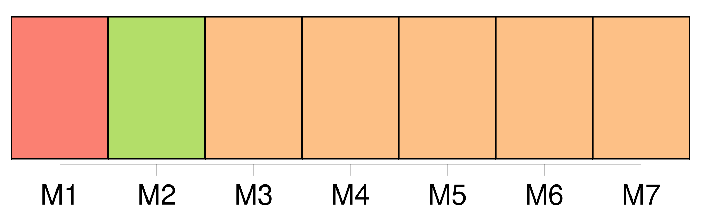
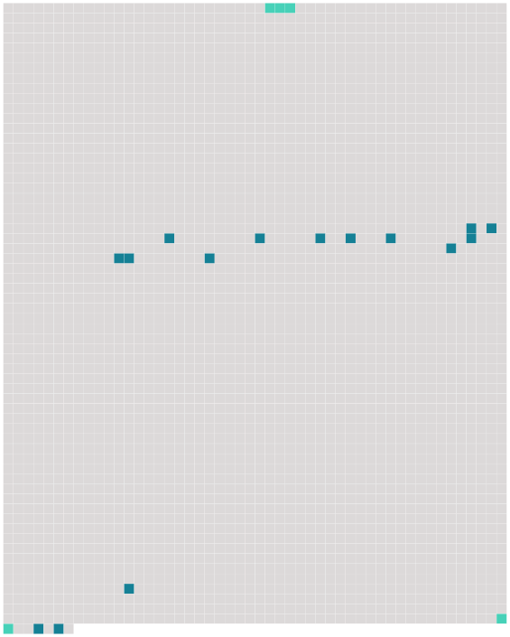

Longueur nb maillons : 17 mentions |
 |
C'est à St-Jean que vécut le jeune ménage pendant cinq années ; c'est à St-Jean que naquit Rosalie, puis une seconde fille et [un premier fils] qui reçurent les noms de Louise et de Juste, c'est là que Charlotte aima, pleura, sourit et souffrit. [48 phrases] — J'arrive du collège où j'ai mené [Juste] [ [il] avait précisément cinq ans accomplis, l'âge où les petits Genevois commençaient leur éducation publique ] [il] entrera lundi, on m'a promis d' [en] avoir grand soin et de [le] pousser.
[Il] est charmant, [il] dîne avec nous au grand contentement de [ses] sœurs, rien n'est si mignon que de voir leurs caresses réciproques ». [2 phrases] Vous trouverez [Juste] en bavaroise, collet et paremens de velours bleu. On m'a fait dire qu' [il] [s'] était si bien trouvé du collège qu' [il] n'en voulait pas revenir. [67 phrases]
» [5 phrases] Comme je connaissais les êtres de la maison, mon premier soin en arrivant fut de chercher de quoi manger, je trouvai un pain, la joie fut grande ; j'oublie tout, j'arrive sur le théâtre au milieu de la représentation et tenant mon pain, je crie à [mon frère] : « [Juste] !! [Juste] !! |
 |
Il est possible de télécharger la ressource sur la page Ortolang |
Si vous avez des questions ou vous voyez des erreurs, merci d'envoyer un mail à silvia.federzoni89@gmail.com |